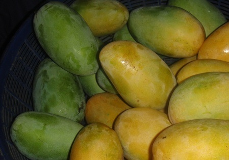

 Mango is the national fruit of India which is loved by one and all. It is a very juicy, pulpy and luscious fruit. Ripe mangoes can either be consumed raw or in the form of salad, juice, jams, milkshake or pickles. Mango is a rich source of various vitamins and minerals.Mango is the national fruit of India which is loved by one and all. It is a very juicy, pulpy and luscious fruit. Ripe mangoes can either be consumed raw or in the form of salad, juice, jams, milkshake or pickles. Mango is a rich source of various vitamins and minerals. Mango is the national fruit of India which is loved by one and all. It is a very juicy, pulpy and luscious fruit. Ripe mangoes can either be consumed raw or in the form of salad, juice, jams, milkshake or pickles. Mango is a rich source of various vitamins and minerals.Mango is the national fruit of India which is loved by one and all. It is a very juicy, pulpy and luscious fruit. Ripe mangoes can either be consumed raw or in the form of salad, juice, jams, milkshake or pickles. Mango is a rich source of various vitamins and minerals. Mango is the national fruit of India which is loved by one and all. It is a very juicy, pulpy and luscious fruit. Ripe mangoes can either be consumed raw or in the form of salad, juice, jams, milkshake or pickles. Mango is a rich source of various vitamins and minerals.Mango is the national fruit of India which is loved by one and all. It is a very juicy, pulpy and luscious fruit. Ripe mangoes can either be consumed raw or in the form of salad, juice, jams, milkshake or pickles. Mango is a rich source of various vitamins and minerals.